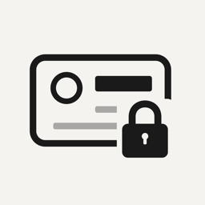

MaskCopy 1.0.0Answers to common questions, the privacy policy and the terms. If something isn't covered here, write to us and we'll reply within a few days.
Tap the + button on the review screen to add a box, or tap an existing box to move it or drag its corners. Every box can be adjusted before you share. Please tell us which document it was, so the next version recognises it.
Switch that kind off in the list under the document, or tap the box and turn off Hide.
Open the information button on the first screen. Passports, national ID cards, residence permits and driving licences from 27 countries are recognised field by field. Passports from other countries still have their machine-readable zone found. Recognition varies by document version and photo, so check every copy before sharing.
No. It has no networking code, no account and no analytics. The document is read on your iPhone and nothing is kept after you finish.
Yes. Covered parts are painted over with an opaque fill, never blurred, and the copy is a single flattened image. A PDF contains only that image, without text layers or annotations.
Save puts it where you chose in the Files app. Share hands it to the app you pick. MaskCopy keeps no copy itself.
Up to four pages are imported at once. From a longer PDF or scan, choose the pages you need.
Last updated 9 November 2026.
MaskCopy collects no data. Its code contains no networking, and it has no accounts, analytics, telemetry, crash reporting, advertising or third-party code. Unlike a Mac app, an iPhone app cannot be barred from the internet by the system, so this is a promise about MaskCopy's code, which is open source for anyone to check.
MaskCopy uses the camera only while you scan a document, and photos and files only when you choose them. It reads the document with Apple's Vision framework on your iPhone to find the parts to hide: text, faces and barcodes. Nothing is sent anywhere to do this. From PDFs and scans with more than four pages, only the pages you select are processed.
The document and its preview are kept in memory while you review it. A temporary JPG or PDF is written only when you choose Save or Share, and temporary copies are deleted when you finish, start again or next open MaskCopy. It keeps no history. While a document is open, MaskCopy covers it when you switch apps, so it doesn't show in the app switcher.
The copy has the hidden parts painted over, and the recipient, purpose and date written across every page. JPG and PDF contain only the flattened copy, with no source photo metadata such as location or camera details. Where the copy goes after you share it is up to you and the app you share it with.
MaskCopy is suitable for all ages and collects nothing from anyone, including children. Questions about privacy: hello@tang-spark.no. The full policy is also in the source repository.
MaskCopy is free, and its source code is released under the Apache License 2.0.
It is provided as is, without warranty. MaskCopy suggests what to cover, but recognition varies by document and photo: you are responsible for checking every copy before you share it. TangSpark is not liable for damages from using it, as far as the law allows.
App Store downloads are also covered by Apple's standard licence agreement.
First release: scan or import a document, masks suggested for 27 countries, adjustable boxes, a watermark for the recipient, purpose and date, and JPG or PDF export, all on your iPhone.
Write to hello@tang-spark.no.
Never send a photo of a real identity document, not even a masked one. Tell us the country, the kind of document and roughly when it was issued, and which field was covered wrongly or left visible.
Security issues: see SECURITY.md.